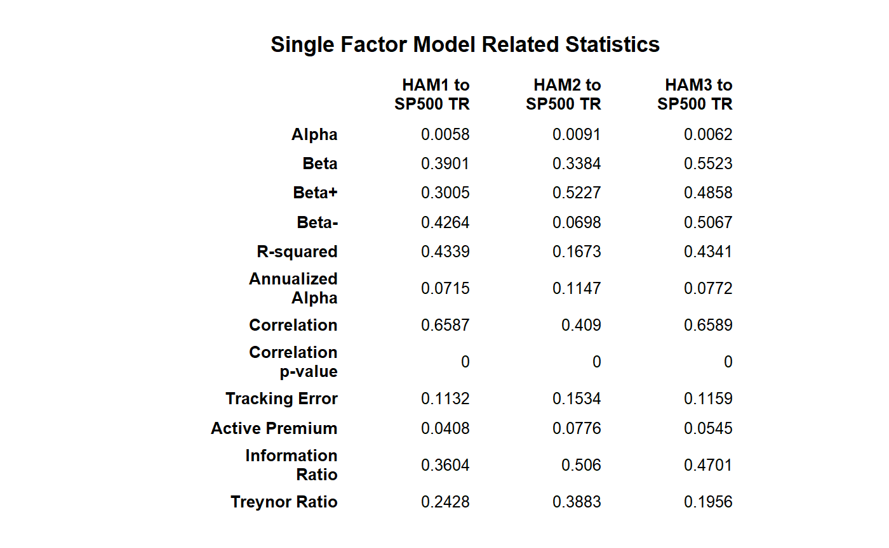

Takes a set of returns and relates them to a benchmark return. Provides a set of measures related to an excess return single factor model, or CAPM.
table.SFM(Ra, Rb, scale = NA, Rf = 0, digits = 4)
| Ra | a vector of returns to test, e.g., the asset to be examined |
|---|---|
| Rb | a matrix, data.frame, or timeSeries of benchmark(s) to test the asset against. |
| scale | number of periods in a year (daily scale = 252, monthly scale = 12, quarterly scale = 4) |
| Rf | risk free rate, in same period as your returns |
| digits | number of digits to round results to |
This table will show statistics pertaining to an asset against a set of benchmarks, or statistics for a set of assets against a benchmark.
CAPM.alpha CAPM.beta
TrackingError ActivePremium
InformationRatio TreynorRatio
data(managers) table.SFM(managers[,1:3], managers[,8], Rf = managers[,10])#> HAM1 to SP500 TR HAM2 to SP500 TR HAM3 to SP500 TR #> Alpha 0.0058 0.0091 0.0062 #> Beta 0.3901 0.3384 0.5523 #> Beta+ 0.3005 0.5227 0.4858 #> Beta- 0.4264 0.0698 0.5067 #> R-squared 0.4339 0.1673 0.4341 #> Annualized Alpha 0.0715 0.1147 0.0772 #> Correlation 0.6587 0.4090 0.6589 #> Correlation p-value 0.0000 0.0000 0.0000 #> Tracking Error 0.1132 0.1534 0.1159 #> Active Premium 0.0408 0.0776 0.0545 #> Information Ratio 0.3604 0.5060 0.4701 #> Treynor Ratio 0.2428 0.3883 0.1956result = table.SFM(managers[,1:3], managers[,8], Rf = managers[,10]) textplot(result, rmar = 0.8, cmar = 1.5, max.cex=.9, halign = "center", valign = "top", row.valign="center", wrap.rownames=15, wrap.colnames=10, mar = c(0,0,3,0)+0.1)title(main="Single Factor Model Related Statistics")